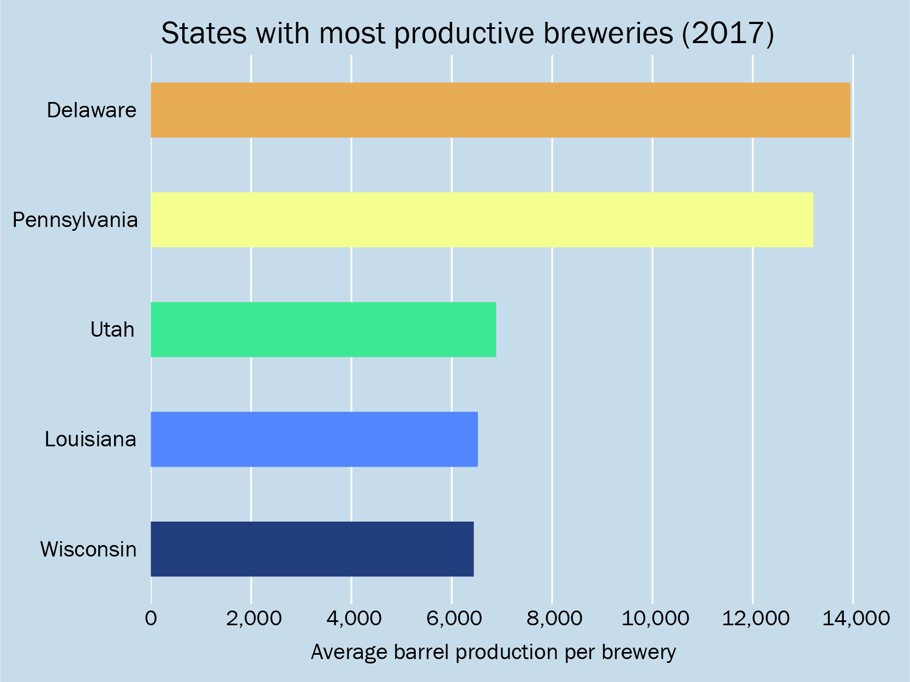
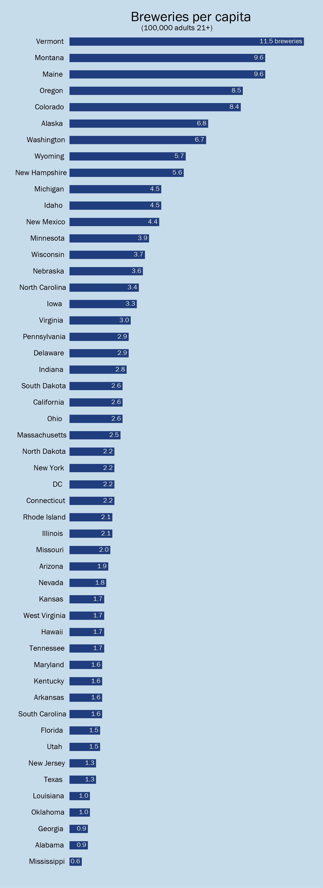
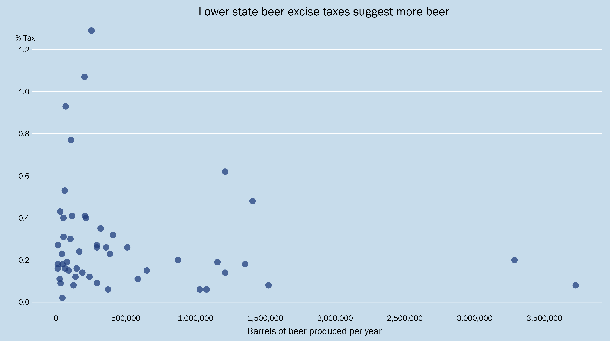

Beer me.
BY Veronica Penney
Published July 20, 2018
A Google search for the "best beer state" will return a treasure trove of listicles that focus on one of two measures: breweries per capita, or which states are home to the author's favorite breweries.
The Numbers
The information represented here is provided by the Brewers Association, an American trade group that promotes and supports the United States craft beer industry. According to the Brewers Association, craft brewers produce less than six million barrels of beer annually, are independently owned, and dedicate a majority of their alcohol by volume production to beer.
Source: Brewers Association
When comparing the number of breweries to the barrels of beer produced per state, the outliers are Delaware and Pennsylvania, which have a noticably higher production-per-brewery average than other states. Statistics provided by the Brewers Association are for each state as a whole, so this could possibly be attributed to larger regional breweries, which would skew the average in those states.
California is also an outlier on this graph, but only because of its large number of breweries. In terms of production per brewery, the state follows the national production average per brewery.
A closer look
 SOURCE: Brewers Association
SOURCE: Brewers Association
Breweries per capita
Breweries per capita is a measure of the number of breweries per 100,000 drinking-age adults for each U.S. state.
Source: Brewers Association
As much as the West Coast is touted for its brewery scene, Vermont, Montana, and Maine have the greatest number of breweries per capita.
How about taxation?
Excise tax is charged on all beer sales, including retail sales, restaurant sales, and tasting room sales.
SOURCE: Brewers Association
The states with the lowest beer excise taxes boast some of the most productive breweries, but this could be a reflection of communities and political climates that favor craft breweries, rather than a direct cause of low excise taxes.
Unsurprisingly, the states that tax beers the most heavily are states in the Bible Belt, which are historically opposed to alcohol consumption. Some of these states have dry counties, where the sale of alcohol is prohibited.
Some states do have restrictive alcohol laws, including the twelve that still uphold the Prohibition-era Blue Law that bans alcohol sales on Sunday. Alabama, Indiana, Minnesota, Mississippi, Montana, North Carolina, Oklahoma, South Carolina, Tennessee, Texas, Utah, and West Virginia are the ones to watch out for.
If you order a beer in Utah, you will be required to order food along with your beverage, but good luck finding somewhere to drink in that state anyway.